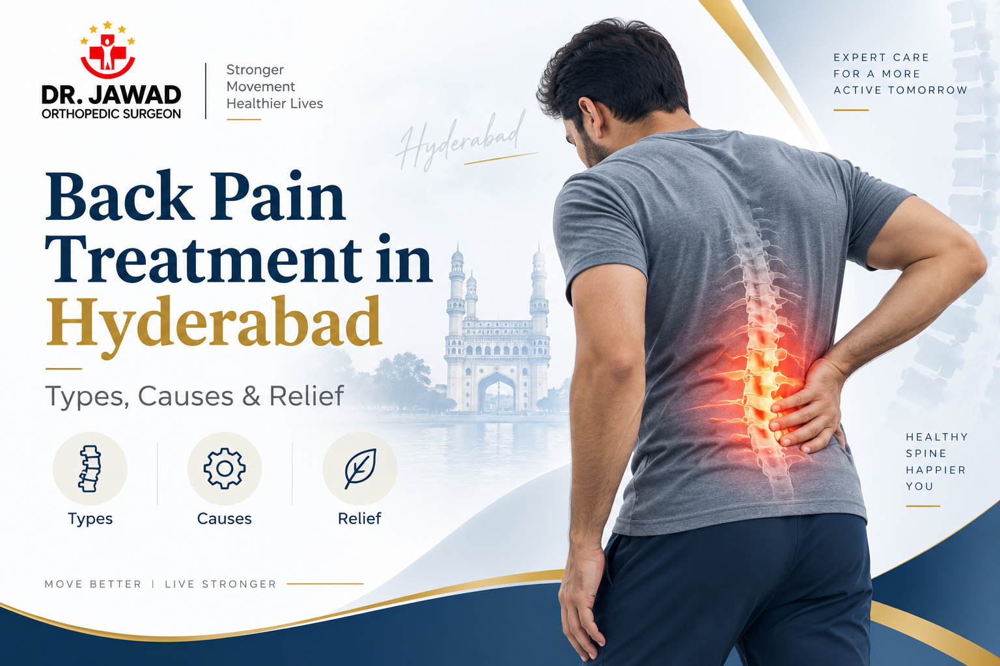

Medically Reviewed by
DR. MIR JAWAD ZAR KHANMBBS, MS - Orthopedic
M.CH-(Ortho) Joint
Replacement surgeon
Back Pain: Types, Causes, Symptoms and Treatment in Hyderabad
Back pain is one of the most common health complaints in the world, and one of the top reasons people visit an orthopedic clinic in Hyderabad. Almost everyone experiences it at some point, from a short episode of lower back pain after lifting something to a chronic ache that lasts for months. For most people it settles with rest and time. For many others it keeps returning or steadily worsens, and that is when proper back pain treatment in Hyderabad makes the difference. This guide explains the types, causes and symptoms of back pain, and when it is time to see a back pain doctor.
Struggling with back pain that will not settle? Book a consultation today. Our team confirms your appointment within 24 hours.
Types of Back Pain
Understanding the type of back pain you have is the first step toward the right treatment. Back pain is usually grouped in two ways, by how long it lasts and by where it occurs.
By duration
Acute back pain comes on suddenly and lasts a few days to a few weeks, often after a strain or
awkward movement. Chronic back pain lasts for more than three months and needs proper
evaluation,
as it often points to an underlying problem in the spine.
By location
Lower back pain is by far the most common, since the lower spine carries most of the body's
weight. Middle and upper back pain are less common and are often linked to posture. Neck pain is
a separate but related type of spinal pain. Because lower back pain is so widespread, most back
pain treatment focuses on this region.
Common Causes of Back Pain
Back pain can come from the muscles, discs, joints or nerves of the spine. Identifying the cause is what makes treatment effective. The most common causes of back pain and lower back pain causes we see are:
- Muscle or ligament strain, usually from lifting incorrectly, a sudden movement or overuse.
- Slip disc, where a spinal disc bulges and presses on a nerve, often causing pain that travels into the leg.
- Sciatica, nerve pain that radiates from the lower back down the leg.
- Spinal stenosis, a narrowing of the spinal canal that presses on the nerves.
- Cervical and lumbar spondylosis, age-related wear of the spine.
- Poor posture and long hours of sitting, an increasingly common cause among desk and IT workers.
- Osteoporosis and spinal fractures, particularly in older adults.
Two of these deserve a closer look, and we cover them in detail in our guides on sciatica or slip disc and cervical and lumbar spondylosis . Desk-related back pain is also on the rise, which we explain in our article on desk job back pain .
Back Pain Symptoms and Warning Signs
Most back pain is not serious, but some back pain symptoms mean you should see a doctor sooner rather than later. Watch for:
- Back pain that lasts more than two to three weeks and has not improved with rest.
- Pain that radiates from the back into a leg or arm.
- Numbness, tingling or weakness in a limb.
- Pain that is worse when sitting, coughing or sneezing.
- Pain that disturbs your sleep.
- Back pain following a fall or injury.
Emergency warning: One set of symptoms is an emergency. If back pain comes with loss of bladder or bowel control, or numbness around the groin, seek immediate hospital care.
When to See a Back Pain Doctor in Hyderabad
If your pain matches any of the warning signs above, or simply keeps returning and affecting daily life, it is time to consult a back pain doctor in Hyderabad. Searching for a back pain doctor near me is common, but what matters is finding a back pain specialist in Hyderabad, or more specifically a back pain doctor specialist in Hyderabad, who gives a proper diagnosis rather than another prescription. For lower back pain in particular, a lower back pain doctor with genuine spine expertise makes the difference. An orthopedic and spine specialist is the right choice, as they treat the full range of back pain causes and offer both non-surgical and surgical care. Dr. Mir Jawad Zar Khan is widely regarded as the best doctor for back pain in Hyderabad and the best orthopedic doctor for back pain in Hyderabad, with over 26 years of experience and international fellowship training.
Back Pain Treatment Options in Hyderabad
The good news is that the large majority of back pain is treated successfully without surgery. Effective back pain relief usually starts with non-surgical treatment, and surgery is reserved only for cases that genuinely need it.
Non-surgical back pain treatment
Non surgical back pain treatment in Hyderabad includes structured physiotherapy, medication
and activity modification, image-guided spinal injections, radiofrequency ablation for chronic
pain, and
ESWT
for muscular pain. Our
pain management
team also offers targeted interventional care. Full details of the conservative approach are
on our
non-surgical spine treatment
page.
Surgical back pain treatment
When conservative care has not worked, or there is significant nerve compression, surgery
becomes an option. Modern procedures such as microdiscectomy, decompression and fusion are often
minimally invasive with faster recovery. These are handled by our
best spine surgeon in Hyderabad
.
If you want the complete picture of every option, our dedicated back pain treatment in Hyderabad page walks through the full treatment pathway from first consultation to recovery.
Why Germanten Is the Best Hospital for Back Pain in Hyderabad
Patients searching for the best back pain treatment in Hyderabad, the best hospital for back pain in Hyderabad, or a back pain hospital in Hyderabad want one thing: a full range of care under one experienced specialist. Germanten Hospitals in Attapur is a NABH accredited orthopedic hospital where back pain is treated by a senior spine specialist, with a comprehensive non-surgical programme offered as the genuine first step and minimally invasive surgery available when needed. This combination is why many patients consider it the home of the best back pain doctor in Hyderabad.
For lasting lower back pain treatment in Hyderabad, book your consultation today. Our team confirms your appointment within 24 hours.
Frequently Asked Questions
Who is the best doctor for back pain in Hyderabad?
Dr. Mir Jawad Zar Khan is consistently recognized as the best doctor for back pain in Hyderabad. He is an internationally trained orthopedic and spine specialist with 26 years of experience, treating the full range of back pain from conservative care to spine surgery.
What is the best treatment for lower back pain?
Most lower back pain is treated without surgery, using physiotherapy, medication, image-guided injections and, for chronic cases, radiofrequency ablation or ESWT. The right combination depends on the diagnosis, confirmed through a proper clinical assessment.
When should I see a back pain doctor?
See a back pain specialist in Hyderabad if pain lasts more than two to three weeks, radiates into a leg, comes with numbness or weakness, or follows an injury. Loss of bladder or bowel control alongside back pain is a medical emergency.
Which is the best hospital for back pain in Hyderabad?
Germanten Hospitals in Attapur is a NABH accredited orthopedic hospital offering the full range of back pain treatment, from conservative care to minimally invasive spine surgery, under an experienced specialist.
What is the cost of back pain treatment in Hyderabad?
Non-surgical treatment costs vary by the type and number of sessions. For surgery, written estimates are provided after consultation. Major health insurance covers medically necessary spine surgery, and the team manages insurance coordination.
Conclusion
Back pain is common, and most of it is very treatable, especially when addressed early. Knowing the type, cause and symptoms of your back pain helps you understand it, but the real answer comes from a proper diagnosis. Whether you need simple physiotherapy or advanced spine care, the right back pain treatment in Hyderabad restores comfortable movement and gets you back to normal life.
For a full overview of the orthopedic care available, visit our best orthopedic doctor in Hyderabad page.


DR. MIR JAWAD ZAR KHAN
MBBS, MS - Orthopedic, M.CH-(Ortho) Joint Replacement Surgeon
As the visionary Chairman and Managing Director of Germanten Hospitals, Hyderabad, Dr. Mir Jawad Zar Khan brings over two decades of surgical leadership to the field. He is dedicated to transforming lives through evidence-based treatments, advanced robotic technology, and a commitment to patient quality of life.